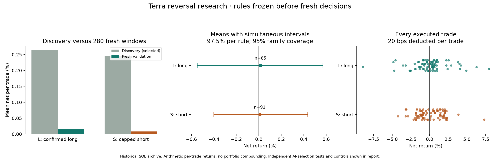
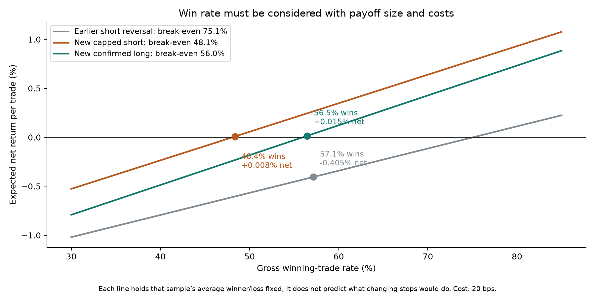

280 fresh isolated Terra calls · 11,295 recorded strategy/control definitions · 29 September 2026
Positive backtests found; no reliable profit edge verified
Two locked rules had small positive net returns on fresh historical windows. Neither passed the prespecified verification tests. The complete expanded search also produced zero passes after accounting for the number of alternatives tested. The profit objective remains unmet.
Written findings · Every primary trade · All 11,295 search definitions · Frozen protocol · Statistical audit · Expanded search audit · Hedge results · Stop-out results
Fresh test of the two frozen rules
| Rule | Trades | Gross win rate | Mean gross | Mean net | AI-value adjusted p |
|---|---|---|---|---|---|
| L | 85 | 56.5% | +0.215% | +0.015% | 0.291 |
| S | 91 | 48.4% | +0.208% | +0.008% | 0.063 |
L: AI SHORT, positive first-15-minute confirmation, then long for four hours. S: AI LONG, short with stop 1.5× AI stop, target 2× strategy risk, four-hour cap.
Net assumes 20 bps roundtrip. Both uncertainty intervals include losses; both means turn negative at 30 bps. Removing one largest winner makes each mean negative. Short entry assumes immediate inference; prescribed delays are reported.

Why win rate was not enough

Risk reshaping improved the backtest payoff distribution, but did not create a comfortable margin over fees. New long/short break-even costs were only 21.5/20.8 bps against the assumed 20 bps. These lines describe observed payoff sizes; changing a stop also changes the winning-trade rate.
The wider search did not produce verification
11,295 definitions, 9,336 unique return vectors, 24 calendar quarters and 20,000 shared cluster resamples. Global adjusted p=0.977; zero passes. This follow-up reused the validation data and is explicitly exploratory.
The strongest long lead averaged +0.335% net over 65 newer trades, but only +0.012% in 22 older trades and had a negative latest-period average. Hedging BTC made returns worse. Stop-out fades failed to reproduce between old and new samples. No favorable subset was promoted as verified.
Recorded, checked and preserved
Exact anonymized inputs, raw model responses, session isolation audits, all trades, skips, controls and failed search cells are saved. Independent calculations reproduced execution, fees, 78,400 donor brackets, conditional permutations and complete-family corrections. Previous data and results remain unchanged.
280 of the permitted 300 physical snapshot calls were used, with zero retries. The remaining 20 would be too small to establish the modest effects seen here and were not used for optional stopping. This is historical SOL research, not live or chronological future proof. Funding, borrow and market impact are not modeled.